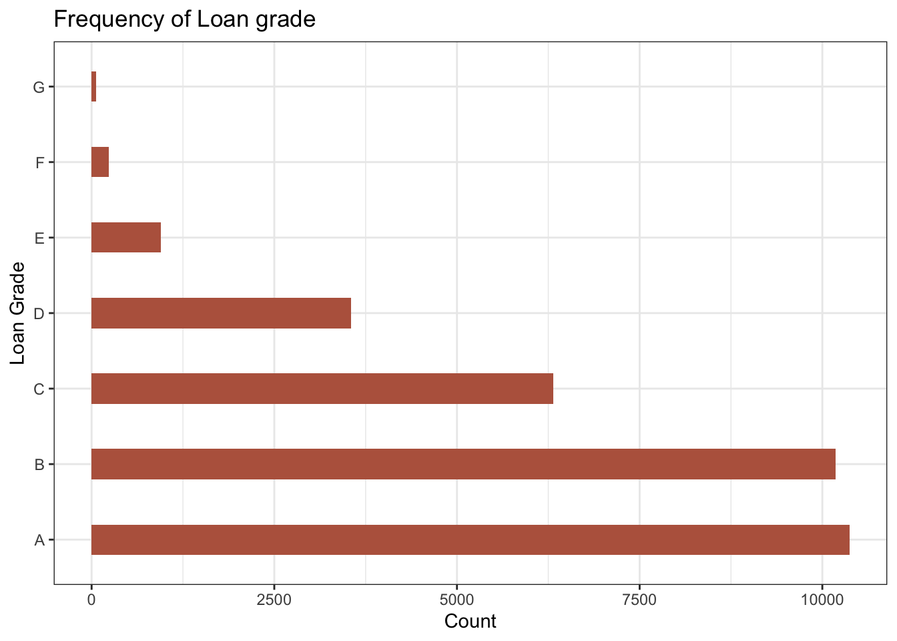
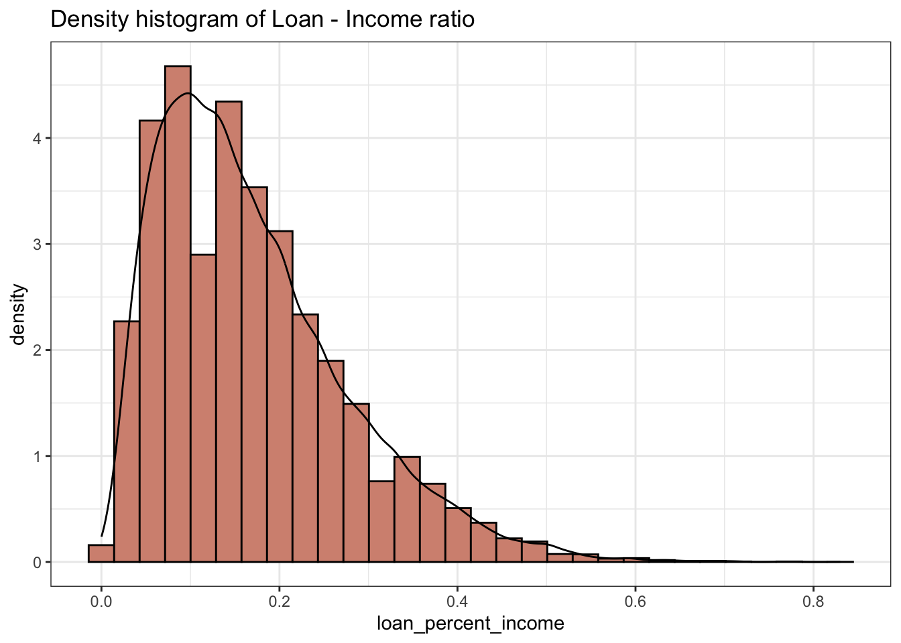
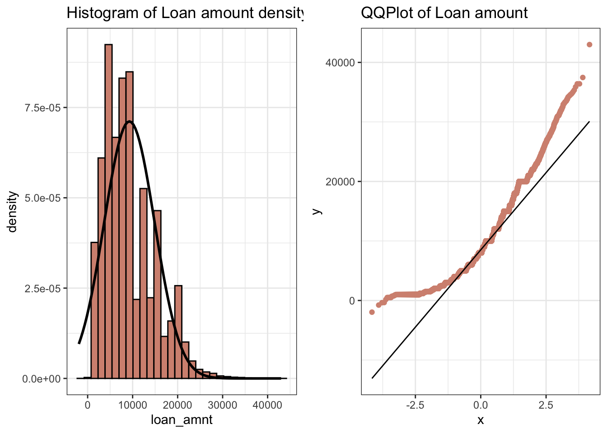
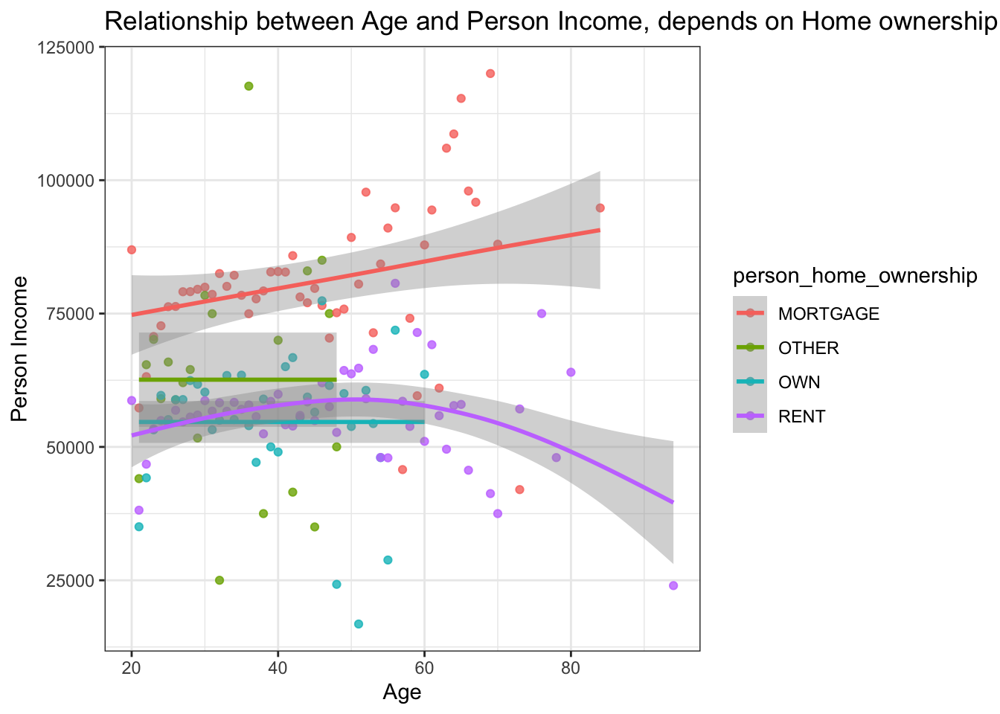
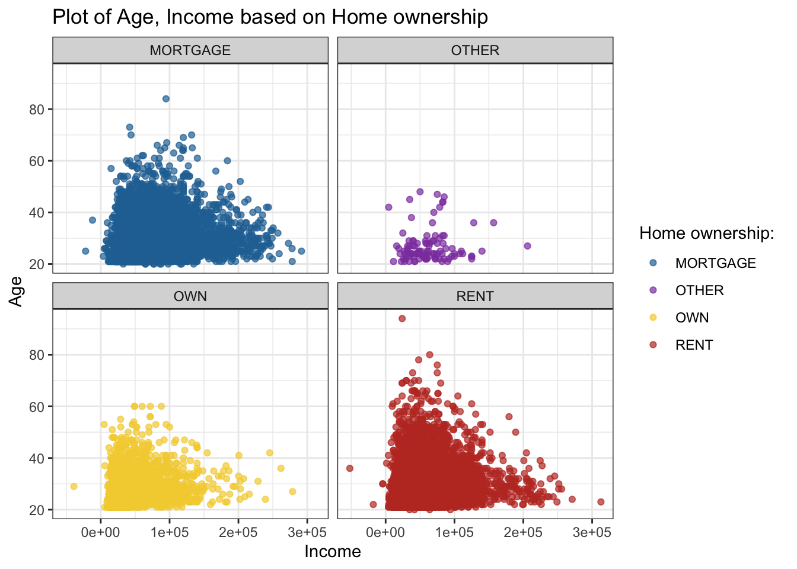
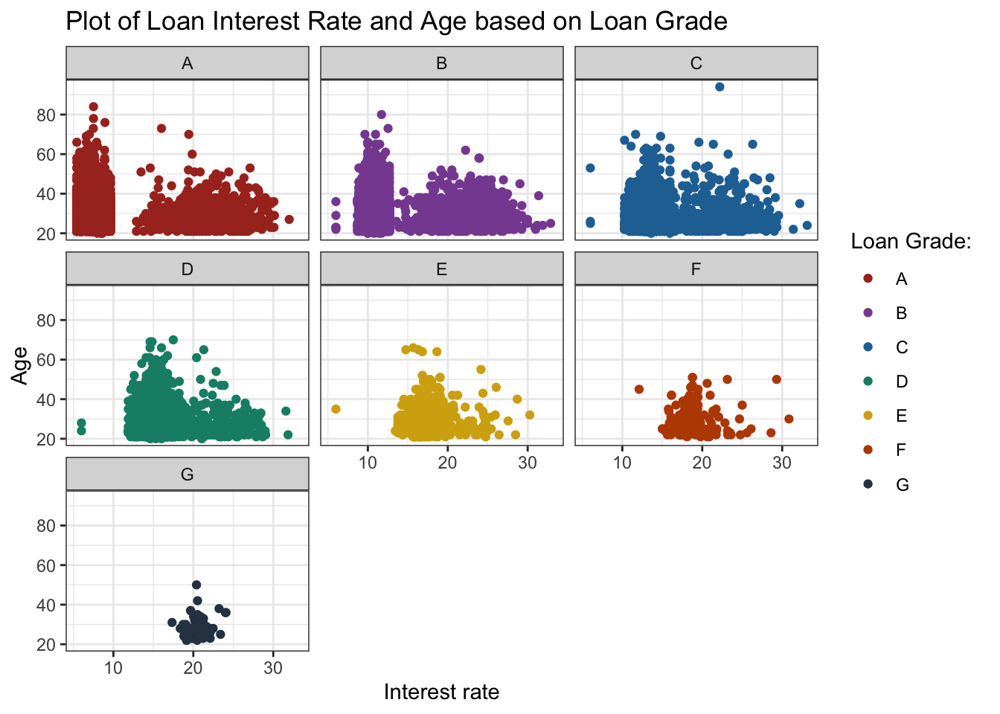
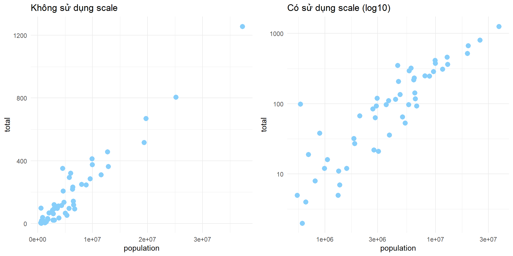
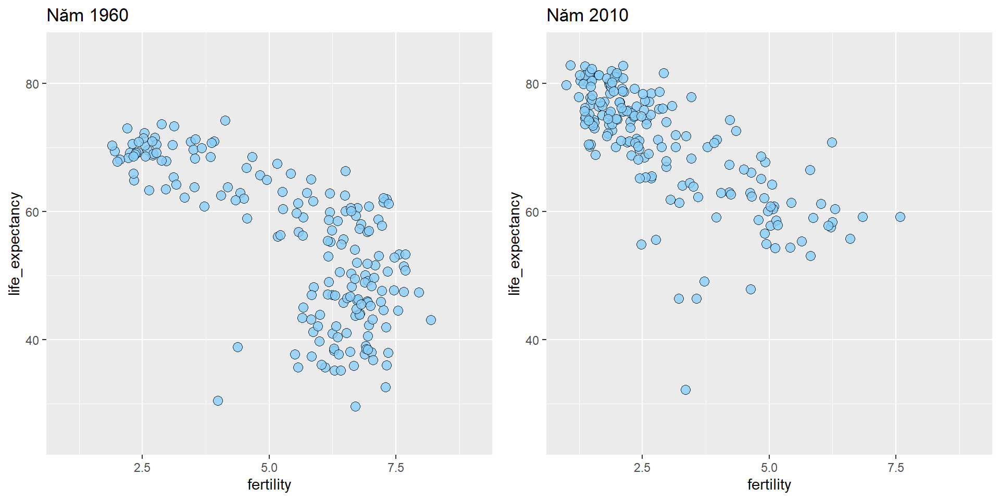

Chương 1 Tính toán phí bảo hiểm bằng mô hình tuyến tính tổng quát.
Tính toán phí của các sản phẩm bảo hiểm là một công việc phức tạp đòi hỏi phải kết hợp nhiều yếu tố khác nhau. Trước hết dữ liệu lịch sử phải được phân tích chính xác, các xu hướng kinh tế xã hội cũng phải được xác định và thậm chí hoạt động của các công ty cạnh tranh cũng phải được tính đến. Các chuyên gia tính toán (Actuary) được đào tạo bài bản có kiến thức trong tất cả các lĩnh vực này và có khả năng đề xuất những nội dung cần thiết để phát triển và thực hiện thành công chiến lược định giá sản phẩm bảo hiểm. Trong phần này, chúng tôi sẽ minh họa quá trình tính toán ra một trong những nền tảng cơ bản nhất của một quá trình định giá, đó là xác định phí bảo hiểm thuần (Net premium). Chúng tôi xác định các khoản phí bảo hiểm thuần này dựa trên các mô hình tuyến tính tổng quát về tần suất và mức độ nghiêm trọng. Quá trình xây dựng mô hình sẽ được minh họa thông qua tất cả các giai đoạn: xác định đặc điểm dữ liệu, khai phá dữ liệu, phân tích một chiều và đa chiều, kết hợp tần suất và mức độ nghiêm trọng thành phí bảo hiểm thuần và cuối cùng là xác thực mô hình. Các kỹ thuật mà chúng tôi minh họa có thể áp dụng rộng rãi và chúng tôi khuyến khích bạn đọc tích cực thực hành thông qua các đoạn câu lệnh được viết bằng phần mềm R.
Các chuyên gia tính toán phân tích dữ liệu lịch sử và giải thích các xu hướng kinh tế xã hội để xác định mức giá hợp lý của sản phẩm bảo hiểm. Những tính toán của Actuary là nền tảng cho mức giá cuối cùng mà công ty đưa ra cho khách hàng của mình. Đưa ra mức giá cuối cùng phải kết hợp nhiều cân nhắc, chẳng hạn như hành động của đối thủ cạnh tranh, chiến lược tăng trưởng và sự hài lòng của người tiêu dùng… Do đó, các chuyên gia tính toán, các nhà bảo lãnh phát hành, nhóm tiếp thị phân phối sản phẩm, nhóm tiếp nhận yêu cầu bồi thường và ban quản lý công ty phải cùng nhau hợp tác trong việc định giá. Các đối tượng đa dạng này phải hiểu rõ ràng các hướng tiếp cận để định giá và ý nghĩa của các quyết định liên quan.
Trong các phần này của cuốn sách, chúng ta sẽ tập trung vào các giai đoạn đầu tiên của quá trình hình thành giá của sản phẩm bào hiểm đó là “Xây dựng mô hình” và “Xác thực và cải tiến mô hình”. Kết quả của các quá trình này là tính toán ra phí bảo hiểm thuần dựa trên dữ liệu lịch sử và mô hình tuyến tính tổng quát. Sẽ có hai mô hình được xây dựng, một mô hình dành cho tần suất xảy ra sự kiện bảo hiểm và mô hình còn lại sẽ có mục tiêu là mức độ nghiêm trọng. Vì phí bảo hiểm thuần chỉ phản ánh dữ liệu lịch sử nên sẽ không phù hợp để sử dụng làm dự báo giá cho tương lai do không tính toán đến các xu hướng kinh tế xã hội trong khoảng thời gian tiếp theo. Phí bảo hiểm thuần cũng không tính toán đến các chi phí, chi phí vốn rủi ro, hay lợi nhuận biên cần thiết để giúp công ty tồn tại trên thị trường.
Chương sách này được cấu trúc như sau: trong phần xxxx, chúng tôi mô tả các đặc điểm tổng thể chính của tập dữ liệu chúng tôi có sẵn được coi là dữ liệu lịch sử được sử dụng làm cơ sở xây dựng mô hình; trong phần xxxxxxx , chúng tôi bắt đầu khai phá các biến của tập dữ liệu. Đây là tập dữ liệu về bào hiểm đối với các xe ô tô chở khách tư có nhiều đặc điểm điển hình mà bạn sẽ gặp phải mỗi khi làm việc với dữ liệu bảo hiểm. Những hiểu biết về dữ liệu bạn thu được khi khai phá dữ liệu về các biến riêng và mối quan hệ giữa các biến sẽ phục vụ tốt cho bạn trong giai đoạn xây dựng mô hình. Trong Phần 1.4 và 1.5, chúng tôi bắt đầu xây dựng các mô hình: tần suất và mức độ nghiêm trọng tương ứng. Chúng tôi minh họa một số kỹ thuật được áp dụng rộng rãi. Chúng tôi bắt đầu với phân tích một chiều và chuyển sang phân tích đa chiều. Những mô hình chúng tôi xây dựng không nhất thiết phải là những mô hình tốt nhất và chúng tôi khuyến khích người đọc khám phá và cố gắng tạo ra những mô hình tốt hơn. Phân tích dữ liệu không phải là một môn thể thao dành cho khán giả. Người đọc phải tích cực tham gia! Để đạt được mục đích này, chúng tôi đã rải nhiều bài tập xuyên suốt văn bản. Hầu hết các bài tập đều yêu cầu các phép tính được thực hiện tốt nhất trong môi trường cung cấp một tập hợp phong phú các chức năng thống kê và thao tác dữ liệu. Bài tập 1.1. Chuẩn bị môi trường máy tính của bạn. Tải xuống tập dữ liệu được phân cách bằng dấu phẩy sim-modeling-dataset.csv và tải nó vào môi trường của bạn. Tất cả các bài tập đều có lời giải (chúng tôi đã sử dụng môi trường R nguồn mở để minh họa các phép tính cần thiết), nhưng người đọc sẽ được hưởng lợi nhiều nhất khi chỉ xem xét các lời giải sau khi thử một cách trung thực lời giải của chúng. Phần 1.6 kết hợp các mô hình tần suất và mức độ nghiêm trọng để tạo ra phí bảo hiểm thuần túy và Phần 1.7 trình bày một số kỹ thuật xác thực đơn giản trên một phần dữ liệu mà mô hình của chúng tôi chưa từng thấy. Điều quan trọng là nỗ lực lập mô hình của chúng tôi không phóng đại tính chính xác hoặc hiệu suất của các mô hình mà chúng tôi tạo ra. Với sức mạnh tính toán sẵn có ngày nay và các thuật toán phức tạp, thật dễ dàng để chuyển một số mô hình sang dữ liệu. Một mô hình overft có xu hướng trông rất đẹp, nhưng khi đối mặt với dữ liệu mới, dự đoán của nó lại tệ hơn nhiều. Cuối cùng, Phần 1.8 có một số nhận xét kết luận.
1.1 Dữ liệu để xây dựng mô hình
Tập dữ liệu mô hình “modeling-dataset.csv” được sử dụng để là dữ liệu lịch sử các chuyên gia tính toán xây dựng mô hình tuyến tính tổng quát. Bộ dữ liệu bao gồm thông tin về các hợp đồng bảo hiểm ô tô chở khách thương mại và thông tin về yêu cầu bồi thường. Dữ liệu được quan sát trong các năm từ 2010 đến 2013. Có tổng cộng 40.760 hàng và 24 biến.
dat<-read_csv("C:/Users/AD/Desktop/Tex file/Thu latex/Book demo/bookdown_demo_hieu/Dataset/pricing-modeling-dataset.csv")
dat## # A tibble: 40,760 × 24
## pol.id year exposure nb.rb driver.age driver.gender marital.status
## <chr> <dbl> <dbl> <chr> <dbl> <chr> <chr>
## 1 POL0001 2010 1 RB 63 Male Married
## 2 POL0002 2010 1 NB 33 Male Married
## 3 POL0003 2010 1 RB 68 Male Married
## 4 POL0004 2010 0.0833 RB 68 Male Married
## 5 POL0005 2010 1 RB 68 Male Married
## 6 POL0006 2010 0.0833 RB 68 Male Married
## 7 POL0007 2011 1 RB 53 Male Married
## 8 POL0008 2010 1 RB 68 Male Married
## 9 POL0009 2011 0.0833 RB 68 Male Married
## 10 POL00010 2010 1 RB 65 Male Married
## # ℹ 40,750 more rows
## # ℹ 17 more variables: yrs.licensed <dbl>, ncd.level <dbl>, region <dbl>,
## # body.code <chr>, vehicle.age <dbl>, vehicle.value <dbl>, seats <dbl>,
## # ccm <dbl>, hp <dbl>, weight <dbl>, length <dbl>, width <dbl>, height <dbl>,
## # fuel.type <chr>, prior.claims <dbl>, clm.count <dbl>, clm.incurred <dbl>Cần lưu ý là một hàng dữ liệu có thể thể hiện nhiều yêu cầu bồi thường từ một người được bảo hiểm. Biến \(clm.count\) đo lường số lượng yêu cầu bồi thường và biến \(clm.incurred\) là tổng số tiền thanh toán yêu cầu bồi thường riêng lẻ và bao gồm cả các khoản cần phải thanh toán trong tương lai. Các biến độc lập của có thể được nhóm thành bốn loại: biến điều khiển, biến đặc điểm người lái, biến đặc điểm địa lý, và biến đặc điểm phương tiện. Bảng dưới đây cho biết tên các biến trong tập dữ liệu
| Biến mục tiêu | Biến điều khiển | Đặc điểm người lái | Đặc điểm phương tiện | Đặc điểm địa lý |
|---|---|---|---|---|
| clm.count | pol.id | nb.rb | body.code | region |
| clm.incurred | year | driver.age | vehicle.age | |
| exposure | driver.gender | vehicle.value | ||
| marital.status | seats | |||
| yrs.licensed | ccm | |||
| ncd.level | hp | |||
| prior.claims | weight | |||
| length | ||||
| width | ||||
| height | ||||
| fuel.type |
Biến \(year\) cho biết năm (dương lịch) mà xe được bảo hiểm và biến \(exposure\) đo lường khoảng thời gian theo năm mà xe ô tô được bảo vệ trong năm dương lịch. Chúng ta chỉ có một biến địa lý la \(region\) cho chúng ta biết địa điểm (gara) của xe. Điều đáng tiếc là biến \(region\) đã được mã hóa thành số và chúng ta không có bất kỳ thông tin nào về mối liên hệ về mặt không gian của các vùng này. Đây là một nhược điểm đáng kể đối với tập dữ liệu mà chúng ta có. Xin được nhắc lại rằng việc chuẩn bị dữ liệu tốt trước khi xây dựng mô hình là rất quan trọng nên loại bỏ biến chỉ thực hiện khi chúng ta chắc chắn rằng biến không có chứa thông tin hữu ích.
Các biến đặc tính của người lái xe bao gồm độ tuổi (\(driver.age\)), giới tính (\(driver.gender\)) của người điều khiển phương tiện, tình trạng hôn nhân (\(marital.status\)), số năm mà người điều khiển phương tiện đã được cấp phép (\(yrs.licensed\)), mức chiết khấu khi không yêu cầu bồi thường \(ncd.level\) (giá trị cao hơn phản ánh mức chiết khấu lớn hơn khi không có bất kỳ yêu cầu nào) và số lượng yêu cầu gửi trước đó. Biến \(nb.rb\) cho chúng ta biết hợp đồng này là hoạt động kinh doanh mới (nb) hay hoạt động kinh doanh tái tục (rb).
Các biến đặc tính của xe đo lường các thuộc tính khác nhau như kiểu dáng thân xe (\(body.code\)); tuổi và giá trị của xe (\(vehicle.age\) và \(vehicle.value\)); số lượng chỗ ngồi (\(seats\)); và trọng lượng (\(weight\)), chiều dài (\(length\)), chiều rộng (\(width\)) và chiều cao (\(height\)) của xe. Các biến \(ccm\), \(hp\) và \(fuel.type\) lần lượt đo kích thước của động cơ theo xăng-ti-mét khối, mã lực và loại nhiên liệu (xăng, dầu diesel hoặc khí hóa lỏng).
Như đã giới thiệu ở trên, hai biến mục tiêu là \(clm.count\) và \(clm.incurred\), cho biết số lần gửi yêu cầu bồi thường và tổng chi phí cuối cùng của những yêu cầu đó. Tất cả các biến trong tập dữ liệu đều có thể được phân loại là liên tục hoặc rời rạc. Bảng xxxxxx trình bày một số chỉ số thống kê cho 14 biến liên tục và Bảng xxxxxx trình bày một số thông tin về 12 biến rời rạc.
| Tên biến | Trung bình | Phương sai | Giá trị min | Giá trị max | Trung vị |
|---|---|---|---|---|---|
| exposure | 0.51 | 0.27 | 0.08 | 1.00 | 0.50 |
| driver.age | 44.55 | 10.78 | 18.00 | 93.00 | 44.00 |
| yrs.licensed | 3.21 | 1.89 | 1.00 | 10.00 | 3.00 |
| vehicle.age | 3.26 | 2.59 | 0.00 | 18.00 | 3.00 |
| vehicle.value | 23.50 | 8.89 | 4.50 | 132.60 | 22.10 |
| ccm | 1670.69 | 390.12 | 970.00 | 3198.00 | 1560.00 |
| hp | 86.38 | 19.62 | 42.00 | 200.00 | 75.00 |
| weight | 1364.22 | 222.01 | 860.00 | 2275.00 | 1320.00 |
| length | 4.32 | 0.36 | 1.80 | 6.94 | 4.28 |
| width | 1.78 | 0.10 | 1.48 | 2.12 | 1.74 |
| height | 1.81 | 0.09 | 1.42 | 2.52 | 1.82 |
| prior.claims | 0.83 | 1.33 | 0.00 | 20.00 | 0.00 |
| clm.count | 0.08 | 0.30 | 0.00 | 5.00 | 0.00 |
| clm.incurred | 66.52 | 406.23 | 0.00 | 11683.58 | 0.00 |
| Tên biến | Số giá trị rời rạc | Giá trị mode | Các giá trị điển hình |
|---|---|---|---|
| year | 4 | 2012 | 2010,2011,2012,2013 |
| nb.rb | 2 | NB | NB,RB |
| driver.gender | 2 | Male | Female,Male |
| marital.status | 4 | Married | Divorced,Married,Single,Widow |
| ncd.level | 6 | 1 | 1,2,3,4,5 |
| region | 38 | 17 | 1,2,3,4,5 |
| body.code | 8 | A | A,B,C,D,E |
| seats | 8 | 5 | 2,3,4,5,6 |
| fuel.type | 3 | Diesel | Diesel,Gasoline,LPG |
| Năm | Exposure | Số yêu cầu | Tổng giá trị | Tần suất | Mức độ nghiêm trọng |
|---|---|---|---|---|---|
| 2010 | 3661.9 | 422 | 287868.9 | 0.115 | 78.612 |
| 2011 | 5221.7 | 551 | 314430.6 | 0.106 | 60.216 |
| 2012 | 6527.2 | 1278 | 1021151.8 | 0.196 | 156.446 |
| 2013 | 5386.2 | 1180 | 1087735.2 | 0.219 | 201.949 |
| Total | 20797.1 | 3431 | 2711186.6 | 0.165 | 130.364 |
Thống kê chung về tần suất và mức độ nghiêm trọng theo năm được cho trong Bảng xxxxxx. Lưu ý rằng khối lượng kinh doanh đã tăng khoảng 78% từ năm 2010 đến năm 2012 và sau đó giảm 17% vào năm 2013. Tần suất trong hai năm đầu tiên là khoảng 11% và sau đó tăng đáng kể lên khoảng 20%. Mức độ nghiêm trọng trung bình trong tất cả các năm dương lịch là 790, nhưng có mức tăng mạnh theo thời gian, ngoại trừ năm 2011.
Thông thường quá trình xây dựng và xác thực mô hình sẽ cần chia dữ liệu của thành ba phần: tập dữ liệu huấn luyện (training dataset), tập dữ liệu kiểm tra mô hình (test dataset) và tập dữ liệu xác thực mô hình (validation dataset). Lưu ý rằng việc phân chia dữ liệu thành ba phần chỉ khả thi khi có một lượng lớn dữ liệu. Trong trường hợp của dữ liệu ở trên, chúng ta chỉ có khoảng 41.000 quan sát trong bốn năm dương lịch. Đây là một tập dữ liệu không đủ lớn, vì vậy chúng tôi sẽ sử dụng phương pháp tập xác thực chéo. Thay vì chia dữ liệu thành ba tập, chúng ta sẽ chỉ chia dữ liệu thành hai tập: tập huấn luyện và tập xác thực. Tập dữ liệu huấn luyện để phát triển và thử nghiệm các mô hình chứa 70% dữ liệu. 30% dữ liệu được sử dụng để kiểm tra mô hình. Trong xác thực chéo, chúng tôi chia dữ liệu huấn luyện của mình thành năm tập hợp con (5-folds) và gắn nhãn cho các tập này từ 1 đến 5. Tham số cuối cùng của mô hình được sử dụng là giá trị trung bình của các tham số được ước lượng ra từ mỗi lần xác thực chéo.
1.2 Phân tích khai phá dữ liệu
Trong phần này, chúng ta bắt đầu bằng cách khai phá các biến riêng lẻ để hiểu rõ hơn về thông tin có trong tập dữ liệu của mình. Trong quá trình phân tích dữ liệu, chúng ta sẽ tập trung vào việc tìm hiểu mức độ phổ biến của từng biến, loại giá trị mà mỗi biến nhận, cách mã hóa các giá trị còn thiếu và mối quan hệ qua lại giữa các biến.
1.2.1 Biến tần suất và mối liên hệ đến các biến khác
Từ phần trước, chúng ta biết rằng tần suất chung của toàn bộ tập dữ liệu là 16,5%. Do chúng ta xây dựng mô hình dựa trên cách tiếp cận xác thực chéo nên dữ liệu xây dựng mô hình chỉ bao gồm 60% dữ liệu hiện có. Chúng ta chia dữ liệu một cách ngẫu nhiên như sau
# Đổi các biến rời rạc về kiểu factor
factor.variable<-c("year","nb.rb","driver.gender","marital.status","ncd.level","region",
"body.code","seats","fuel.type")
dat<-as.data.frame(dat)
for (i in 1:ncol(dat)){
if(names(dat)[i] %in% factor.variable){
dat[,i]<-as.factor(dat[,i])
}
}
# Chia dữ liệu thành hai phần, dữ liệu huấn luyện mô hình và dữ liệu xác thực mô hình
set.seed(10)
train.index<-sample(1:nrow(dat),size = round(0.7*nrow(dat),0),replace = FALSE)
training.dat<-dat[train.index,]
test.dat<-dat[-train.index,]
# Tần suất trung bình trên tập dữ liệu huấn luyện
sum(training.dat$clm.count)/sum(training.dat$exposure)## [1] 0.1635727Trên tập dữ liệu huấn luyện, tần suất trung bình là 16,4% rất gần với tần suất chung ở phần trước. Quá trình khai phá dữ liệu là quá trình tìm hiểu biến tần suất phụ thuộc như thế nào vào các biến số mà chúng ta có trong dữ liệu. Hãy bắt đầu bằng cách xem xét biến \(nb.rb\). Đây là một biến chỉ báo cho chúng ta biết hợp đồng bảo hiểm là hoạt động khai thác mới (NB) hay là hợp đồng tái tục (RB). Tần suất trong tập dữ liệu huấn luyện của chúng tôi theo chỉ số khai thác mới hoặc tái tục này nằm trong Bảng xxxxx
| Năm | HĐ mới/Tái tục | Exposure | Số yêu cầu | Tần suất |
|---|---|---|---|---|
| 2010 | NB | 2477.3 | 306 | 0.124 |
| 2010 | RB | 1184.6 | 116 | 0.098 |
| 2011 | NB | 3475.4 | 440 | 0.127 |
| 2011 | RB | 1746.3 | 111 | 0.064 |
| 2012 | NB | 4389.6 | 934 | 0.213 |
| 2012 | RB | 2137.7 | 344 | 0.161 |
| 2013 | NB | 3762.1 | 953 | 0.253 |
| 2013 | RB | 1624.1 | 227 | 0.140 |
| Total | NB | 14104.4 | 2633 | 0.187 |
| Total | RB | 6692.7 | 798 | 0.119 |
Có thể thấy rằng trong dữ liệu đào tạo, tần suất trung bình của với hợp đồng khai thác mới là 18,7% và của các hợp đồng tái tục là 11,9%. Đây là một sự khác biệt đáng kể, do đó biến \(rb.nb\) này là một lựa chọn tốt để đưa vào mô hình.
Tiếp theo, chúng ta quan tâm đến biến vị trí địa lý \(region\). Mặc dù vị trí địa lý đã được mã hóa bằng các số tự nhiên từ 1 đến 38 và chúng ta không biết được vị trí thực sự của các vùng. Tuy nhiên, có sự phân bố không đồng đều về tần suất xảy ra tai nạn giữa các vùng địa lý theo thời gian. Thật vậy, hình vẽ dưới đây mô tả điều đó
 Có thể thấy rằng có sự khác nhau rõ rệt về tần suất xảy ra tai nạn giữa các vùng, và tần suất cũng có sự thay đổi theo thời gian. Do đó, không nên loại bỏ biến vùng ra khỏi dữ liệu xây dựng mô hình.
Tiếp theo chúng ta xem xét \(driver.age\). Biến này cho chúng ta biết tuổi của người điều khiển chính phương tiện. Trong dữ liệu huấn luyện mô hình, chúng ta có độ tuổi từ 18 đến 89 và tuổi 93(!), tổng cộng có 73 độ tuổi duy nhất. Khi gặp dữ liệu như vậy, chúng ta nên nghi ngờ những độ tuổi rất cao này và cần kiểm tra xem dữ liệu có chính xác không. Ngoài ra, chúng ta cũng nên kiểm tra tổng số exposure theo từng độ tuổi.

Có thể thấy rằng khi tổng số exposure nhỏ thì tần suất có biến động rất mạnh, điển hình là độ tuổi dưới 25 và trên 60. Độ tuổi có tần suất tai nạn cao nhất không được thể hiện trong đồ thị ở trên là tuổi 19 với tần suất là 182%, tuy nhiên tổng exposure cho độ tuổi này chỉ là 2,2 năm nên tần suất không có ý nghĩa thống kê. Nhìn chung có sự giảm dần của tần suất xảy ra tai nạn khi độ tuổi trung bình. Bạn đọc có thể quan sát thấy rằng đường thẳng mô tả mối quan hệ tuyến tính giữa tần suất và độ tuổi có độ dốc âm. Như vậy \(driver.age\) cũng là biến cần đưa vào mô hình.
Các biến liên quan đến đặc điểm người lái xe còn có giới tính của người lái xe (\(driver.gender\)) và tình trạng hôn nhân (\(marital.status\). Mối liên hệ của các biến và tần suất được mô tả như đồ thị dưới đây

Có thể thấy rằng tần suất gây ra tai nạn của lái xe nữ là cao hơn so với lái xe nam, sự khác biệt là tương đối rõ trong nhóm những người đã lập gia đình hoặc chưa từng lập gia đình. Cũng giống như kinh nghiệm nghiên cứu từ nhiều dữ liệu khác, nhóm những người góa vợ/chồng có tần suất gây ra tai nạn cao hơn đáng kể so với nhóm khác. Có thể nhận xét rằng tình trạng hôn nhân và giới tính của người lái xe có ảnh hưởng đến tần suất mặc dù ảnh hưởng không rõ ràng như các biến khác.
Chúng ta có thể tiếp tục quá trình trên cho các biến khác liên quan đến người lái xe. Tuy nhiên, mục tiêu cuối cùng sẽ là xây dựng mô hình cho biến tần suất, do đó, bạn đọc có thể dựa trên các nguyên tắc ở trên để nghiên cứu mối liên hệ của các biến khác lên tần suất xảy ra tai nạn. Quá trình khai phá dữ liệu có ý nghĩa quan trọng trong việc lựa chọn đưa biến vào trong mô hình nhất là với các dữ liệu có nhiều biến. Bạn đọc có thể tiếp tục quá trình này với các biến liên quan đến đặc điểm của xe.
1.2.2 Biến mức độ nghiêm trọng và mối liên hệ với các biến khác
Dữ liệu sử dụng để xây dựng mô hình cho mức độ nghiêm trọng chỉ bao gồm các hợp đồng có xảy ra yêu cầu bồi thường. Trong dữ liệu dùng để huấn luyện mô hình, có 2209 hợp đồng nằm trong phạm vi. Giá trị tiền bồi thường trung bình trên mỗi yêu cầu bồi thường là 800,57 \[\begin{align} \cfrac{\textit{Tổng chi phí}}{\textit{Tổng số yêu cầu}} = \cfrac{1.906.958}{2382} = 800,57 \end{align}\]
Trước hết, chúng ta xem xét biến \(nb.rb\) có tác động lên mức độ nghiêm trọng hay không. Bảng dưới đây cho biết số lượng yêu cầu bồi thường, tổng mức bồi thường và giá trị tiền bồi thường trung bình của các hợp đồng bán mới và các hợp đồng tái tục.
| HĐ mới/Tái tục | Tổng giá trị | Số yêu cầu | Mức nghiêm trọng |
|---|---|---|---|
| NB | 1530245.4 | 1848 | 828.055 |
| RB | 376712.6 | 534 | 705.454 |
Có thể thấy rằng mức độ nghiêm trọng trung bình của các hợp đồng khai thác mới (828) cao hơn đáng kể so với các hợp đồng tái tục (705). Điều này cho thấy biến \(nb.rb\) là biến có ý nghĩa giải thích trong mô hình hóa mức độ nghiêm trọng của yêu cầu bảo hiểm.
Việc phân tích các biến liên quan đến đặc điểm của người lái xe hoàn toàn được thực hiện tương tự như đối với biến tần suất nên chúng tôi sẽ không lặp lại. Việc lựa chọn các biến đưa vào mô hình tần suất sẽ được tiếp tục thảo luận trong phần xây dựng mô hình.
1.3 Mô hình tuyến tính tổng quát cho tần suất.
Khi phân tích khai phá dữ liêu, chúng ta biết rằng biến tần suất tập dữ liệu huấn luyện có giá trị trung bình là 16,4% và có một số biến có thể là phù hợp để đưa vào mô hình bao gồm tuổi của người lái xe hoặc chỉ số cho biết hợp đồng là bán mới hay tái tục. Chúng ta sẽ bắt đầu xây dựng mô hình tần số bằng cách thực hiện phân tích mô hình có một biến độc lập duy nhất, sau đó sẽ chuyển sang xây dựng mô hình có nhiều biến độc lập bằng cách bổ sung thêm các biến có ý nghĩa khác. Xây dựng mô hình có một biến độc lập là bước quan trọng để chúng ta có nhận định chính xác về khả năng giải thích của các biến độc lập và cách biến đổi các biến độc lập để tăng khả năng giải thích trước khi xây dựng mô hình có nhiều biến độc lập
Trước khi nói đến biến độc lập, chúng ta cần đưa ra lựa chọn cho hàm liên kết và phân phối cho biến tần suất. Đối với hầu hết các mô hình tính toán phí bảo hiểm thuần, chúng ta muốn có biến phụ thuộc được giải thích bởi biến phụ thuộc thông qua quy tắc nhân, do đó chúng ta sẽ sử dụng hàm liên kết \(log()\). Đối với phân phối biến phụ thuộc, chúng ta có thể chọn giữa phân phối Poisson, phân phối nhị thức âm hoặc phân phối nhị thức do biến tần suất là biến dạng đếm. Hãy nhớ rằng mục tiêu của chúng ta là ước tính tần suất trung bình và mặc dù các giả thiết về phân phối là cần thiết nhưng không quan trọng bằng việc tìm ra các biến độc lập chính xác để đưa vào mô hình.
Nếu phân phối xác suất của số lượng yêu cầu bồi thường là Poisson thì phương sai của biến phụ thuộc phải bằng giá trị trung bình. Tuy nhiên, trong trường hợp dữ liệu chúng ta đang có, và trong hầu hết các tập dữ liệu bảo hiểm, phương sai của tần suất thường lớn hơn giá trị trung bình. Hiện tượng này được gọi là phân tán quá mức. Bạn đọc nên lựa chọn phân phối nhị thức âm trong các trường hợp như vậy. Tuy nhiên, phân phối nhị thức âm không nằm trong nhóm các phân phối kiểu mũ nên để tránh sự phức tạp không cần thiết, chúng tôi vẫn chọn phân phối Poisson cho biến phụ thuộc. Hàm liên kết được sử dụng là hàm log.
1.3.1 Mô hình tuyến tính tổng quát với một biến giải thích.
Mô hình tuyến tính tổng quát đơn giản nhất mà chúng ta có thể áp dụng cho dữ liệu tần suất là mô hình chỉ có duy nhất hệ số chặn. Mô hình này sẽ cho biết tần suất trung bình của biến phụ thuộc. Chúng ta xây dựng mô hình với biến phụ thuộc có phân phối Poisson, với hàm liên kết log, và chỉ có hệ số chặn như sau
##
## Call:
## glm(formula = clm.count ~ 1, family = poisson(link = "log"),
## data = training.dat, offset = log(exposure))
##
## Deviance Residuals:
## Min 1Q Median 3Q Max
## -0.5720 -0.4953 -0.3692 -0.2335 4.5865
##
## Coefficients:
## Estimate Std. Error z value Pr(>|z|)
## (Intercept) -1.81050 0.02049 -88.36 <2e-16 ***
## ---
## Signif. codes: 0 '***' 0.001 '**' 0.01 '*' 0.05 '.' 0.1 ' ' 1
##
## (Dispersion parameter for poisson family taken to be 1)
##
## Null deviance: 11573 on 28531 degrees of freedom
## Residual deviance: 11573 on 28531 degrees of freedom
## AIC: 16097
##
## Number of Fisher Scoring iterations: 6Giá trị ước lượng được của hệ số chặn là \(-1.8105\) và giá trị này khác 0 một cách có ý nghĩa thống kê. Mô hình tuyến tính tổng quát trong trường hợp này có thể được viết như sau: \[\begin{align} & Y_i \sim \mathcal{P}(\lambda_i) \\ & \log(\lambda_i) = \log(e_i) + \beta_0 \end{align}\] trong đó \(e_i\) là giá trị của biến \(exposure\) của hợp đồng thứ \(i\). Nói cách khác, nếu hợp đồng được quan sát đủ 1 năm (\(e_i = 1\)) thì giá trị trung bình của tần suất xảy ra tai nạn là \[\begin{align} \lambda_i = \exp\left(\log(1) + \beta_0\right) = \exp(-1.8105) = 0.164 \end{align}\] Giá trị này rất gần với giá trị trung bình của biến tần suất mà chúng ta đã tính trong phần phân tích khai phá dữ liệu.
Để xây dựng mô hình có một biến phụ thuộc, chúng ta sẽ sử dụng các tiêu chí để so sánh mô hình được để cập trong chương mô hình tuyến tính tổng quát, bao gồm có thước đo \(deviance\) và chỉ tiêu AIC. Nhắc lại rằng thước đo \(deviance\) đo khoảng cách từ giá trị log-likelihood của một mô hình tuyến tính tổng quát đến giá trị log-likelihood lớn nhất có thể có được khi sử dụng cùng một phân phối của biến phụ thuộc trong khi AIC là được tính từ giá trị của hàm log-likelihood có điều chỉnh theo số lượng tham số. Mô hình tuyến tính tổng quát có thước đo \(deviance\) và chỉ tiêu AIC nhỏ hơn là các mô hình phù hợp hơn với dữ liệu.
Trước khi xây dựng mô hình, bạn đọc cần lưu ý về biến độc lập kiểu số và biến độc lập kiểu factor. Biến \(year\) trong mô hình đang được coi là biến kiểu factor với 4 giá trị khác nhau là 2010, 2011, 2012, và 2014, nghĩa là khi chúng ta sử dụng \(year\) như một biến độc lập trong mô hình, sẽ có 4 tham số độc lập được ước lượng dành cho biến \(year\), mỗi tham số đại diện cho 1 giá trị. Nếu chúng ta coi biến \(year\) như một biến kiểu số, khi xây dựng mô hình sẽ chỉ có một tham số ứng với biến \(year\) và thêm 1 hệ số chặn. Với một số biến trong mô hình, chúng ta vừa có thể coi biến đó là kiểu số và vừa có thể coi biến đó là biến kiểu rời rạc. Danh sách các biến nằm trong bảng dưới đây
| Tên biến | Số giá trị riêng biệt | Miền giá trị |
|---|---|---|
| yrs.licensed | 9 | Các số tự nhiên từ 1 đến 9 |
| vehicle.age | 19 | Các số tự nhiên từ 0 đến 18 |
| prior.claims | 18 | Các số tự nhiên từ 0 đến 20 |
Đối với các biến này, chúng ta sẽ lưu trong dữ liệu huấn luyện mô hình đồng thời dưới dạng số (tên biến có \(.num\) và dưới dạng factor (tên biến có \(.f\)).
training.dat<-training.dat%>%mutate(yrs.licensed.num = yrs.licensed,
vehicle.age.num = vehicle.age,
prior.claims.num = prior.claims,
yrs.licensed.f = as.factor(yrs.licensed),
vehicle.age.f = as.factor(vehicle.age),
prior.claims.f = as.factor(prior.claims)) %>%
select(-yrs.licensed,-vehicle.age,-prior.claims)
# thực hiện biến đổi tương tự trên tập xác thực
test.dat<-test.dat%>%mutate(yrs.licensed.num = yrs.licensed,
vehicle.age.num = vehicle.age,
prior.claims.num = prior.claims,
yrs.licensed.f = as.factor(yrs.licensed),
vehicle.age.f = as.factor(vehicle.age),
prior.claims.f = as.factor(prior.claims)) %>%
select(-yrs.licensed,-vehicle.age,-prior.claims)Chúng ta ước lượng các mô hình GLM với một biến độc lập, tính toán \(AIC\) và \(deviance\) và mô tả giá trị \(deviance\) và \(AIC\) trên một đồ thị rải điểm như sau
exposure<-training.dat$exposure
variable.list<-names(training.dat)
remove.list<-c("pol.id","exposure","clm.count","clm.incurred")
variable.list<-variable.list[!(variable.list %in% remove.list)]
deviance <- rep(0,length(variable.list))
AIC <- rep(0,length(variable.list))
for (i in 1:length(variable.list)){
x <- variable.list[i]
simple.dat<-select(training.dat,x,clm.count)
simple.glm<-glm(clm.count~., family = poisson(link = "log"), data = simple.dat,
offset = log(exposure))
AIC[i]<-simple.glm$aic
deviance[i]<-simple.glm$deviance
}
result<-data.frame(variable_names = variable.list, aic = AIC, deviance = deviance)
result%>%ggplot()+geom_point(aes(x = AIC, y = deviance), shape = 21)+
geom_label_repel(aes(x = AIC, y = deviance, label = variable.list))+
ggtitle("So sánh các mô hình GLM có một biến giải thích (1)")+
theme_minimal()
Đồ thị rải điểm mô tả chỉ tiêu AIC trên trục x và giá trị deviance trên trục y. Các biến giải thích tốt hơn sẽ xuất hiện ở góc dưới bên trái của đồ thị, nơi cả deviance và AIC đều có giá trị nhỏ. Chúng ta thấy các biến \(ncd.level\), \(year\) và \(yrs.licensed\) là nằm ở góc trái và phía dưới hơn các biến khác. Biến \(driver.age\) và \(region\) có tác động lên tần suất xảy ra tai nạn nhưng mô hình tuyến tính tổng quát xây dựng trên các biến này lại không có kết quả giống như ta mong muốn. Nguyên nhân là do - Biến \(region\) là biến kiểu rời rạc và có 38 giá trị riêng biệt dẫn đến việc xây dựng mô hình sẽ có quá nhiều tham số. - Biến \(driver.age\) có các giá trị từ 75 tuổi trở lên là có quá ít quan sát và không có tai nạn nào xảy ra.
Đối với các biến kiểu rời rạc trong mô hình tuyến tính tổng quát, kinh nghiệm xây dựng mô hình là kết hợp các nhóm có cùng hệ số ước lượng gần nhau để tạo thành nhóm mới. Điều này giúp mô hình ước lượng có phương sai nhỏ hơn nhưng không làm giảm sai số của mô hình đi quá nhiều. Hình vẽ dưới đây cho biết hệ số ước lượng cho mỗi vùng khác nhau của biến \(region\).
simple.dat<-select(training.dat,region,clm.count)
simple.glm<-glm(clm.count~., family = poisson(link = "log"), data = simple.dat,
offset = log(exposure))
dat1<-data.frame(d.name = names(simple.glm$coefficients), coef = simple.glm$coefficients)
dat1$d.name[1]<-"region1"
dat1$coef[2:38]<-dat1$coef[2:38]+dat1$coef[1]
dat1<-arrange(dat1,-coef)
p1<-dat1%>%ggplot(aes(x = coef, y = d.name))+geom_point()+
scale_y_discrete(limits = dat1$d.name)+theme_minimal()+
xlab("")+ylab("")+ggtitle("Hệ số của biến region trong mô hình GLM")| Tên biến mới | Region |
|---|---|
| R1 | 7,2 |
| R2 | 20,22 |
| R3 | 27,29,14,35 |
| R4 | 11,37,12,30,28,15,19 |
| R5 | 4,13,24,3,10,16 |
| R6 | 1,38,34,31,21,32,25,23 |
| R7 | 6,33,9,17 |
| R8 | 8,26 |
Biến mới được tạo từ biến \(region\) được gọi tên là \(region.f\) được thêm vào dữ liệu như sau
training.dat<-mutate(training.dat, region.f = ifelse(region %in% c(7,2), "R1",
ifelse(region %in% c(20,22), "R2",
ifelse(region %in% c(27,29,14,35), "R3",
ifelse(region %in% c(11,37,12,30,28,15,19), "R4",
ifelse(region %in% c(4,13,24,3,10,16), "R5",
ifelse(region %in% c(1,38,34,31,21,32,25,23), "R6",
ifelse(region %in% c(6,33,9,17), "R7","R8"))))))))
# Thực hiện biến đổi tương tự trên tập xác thực
test.dat<-mutate(test.dat, region.f = ifelse(region %in% c(7,2), "R1",
ifelse(region %in% c(20,22), "R2",
ifelse(region %in% c(27,29,14,35), "R3",
ifelse(region %in% c(11,37,12,30,28,15,19), "R4",
ifelse(region %in% c(4,13,24,3,10,16), "R5",
ifelse(region %in% c(1,38,34,31,21,32,25,23), "R6",
ifelse(region %in% c(6,33,9,17), "R7","R8"))))))))
Có thể thấy rằng mô hình với biến \(region.f\) có chỉ tiêu AIC nhỏ hơn so với \(region\) vì số lượng tham số sử dụng chỉ là 8 tham số thay vì 38 tham số như ban đầu. Bạn đọc có thể tiếp tục quá trình phân tích đơn biến như phân tích đối với biến \(region\) để có các biến đầu vào tốt hơn trong mô hình nhiều biến.
Với các phân tích đơn biến ở trên, chúng ta có thể kết luận rằng các biến \(ncd.levels\), \(year\), \(nb.rb\), \(region.f\), \(yrs.licenced.f\), \(driver.age\) và \(prior.claims\) là các biến có ý nghĩa nhất va có ảnh hưởng đến tần suất gây ra tai nạn. Lưu ý rằng biến \(year\) không phải là biến liên quan đến đặc điểm của người lái xe hay phương tiện được bảo hiểm. Trong các mô hình tần suất và mức độ nghiêm trọng, biến thời gian thường được gọi là biến điều khiển và luôn có mặt trong mô hình đa biến.
1.4 Xây dựng mô hình tuyến tính tổng quát nhiều biến
Sau khi đã có ý tưởng tốt hơn về những biến giải thích phù hợp với dữ liệu, chúng ta có thể chuyển sang xây dựng các mô hình kết hợp nhiều hơn một biến giải thích. Về mặt lý thuyết, để tìm ra mô hình đa biến tốt, chúng ta có thể xem xét cả hai mô hình biến và chọn mô hình tốt nhất; sau đó có thể xem xét cả ba mô hình biến và lại chọn mô hình tốt nhất, v.v. Chiến lược này gọi là \(forward-stepwise-selection\). Tuy nhiên với số lượng biến chúng ta hiện có thì chiến lược này không khả thi Một chiến lược khác là xây dựng một mô hình có đầy đủ các biến sau đó lần lượt loại đi các biến không cần thiết. Mặc dù chiến lược này không yêu cầu về mặt tính toán nhưng nhược điểm chính là sự phụ thuộc vào thứ tự chúng ta loại bỏ đi các biến giải thích. Phương pháp khả thi nhất trong trường hợp hày là xây dựng mô hình đa biến được lựa chọn từ một tập hợp con các biến có ý nghĩa trong phân tích một biến sau đó cố gắng thêm các biến khác vào mô hình.
Chúng ta cho mô hình với 7 biến giải thích \(ncd.levels\), \(year\), \(nb.rb\), \(region.f\), \(yrs.licenced.f\), \(driver.age\) và \(prior.claims.f\) là mô hình cơ sở và sẽ tìm kiếm các biến khác thêm vào mô hình nhằm cải thiện các chỉ tiêu như \(deviance\) và \(AIC\).

Đồ thị trên cho thấy các biến có làm tăng chất lượng của mô hình là \(body.code\), \(height\), và \(marital.status\). Cách tốt nhất để đưa thêm biến độc lập vào mô hình cơ sở là thêm lần lượt từng biến vào mô hình sau đó và lặp lại các bước ở trên. Tuy nhiên, để tránh sự phức tạp không cần thiết, chúng ta sẽ đưa đồng thời cả ba biến vào mô hình sau đó thực hiện kiểm định \(\chi^2\): hiệu số giữa \(residual\) \(deviance\) của mô hình sau khi thêm biến và mô hình cơ sở có phân phối xấp xỉ phân phối \(\chi^2\) với bậc tự do \(m_2 - m_1\), với \(m_2 - m_1\) là số lượng tham số thêm vào trong mô hình mới. Biến \(body.code\) là biến kiểu factor có 8 giá trị riêng biệt, biết \(height\) là biến kiểu số, trong khi biến \(marital.status\) là biến kiểu factor có 4 giá trị riêng biệt, do đó thêm 3 biến vào mô hình sẽ làm cho số lượng tham số của mô hình tăng lên là \((8-1) + 1 + (4-1) = 11\) tham số.
| Mô hình | Residual Deviance | Deviance giảm | Bậc tự do |
|---|---|---|---|
| Mô hình cơ sở | 10884.01 | ||
| Mô hình thêm biến | 10829.02 | 54.99 | 11 |
Giá trị deviance giảm 54.99 sau khi thêm 11 tham số vào mô hình. Lưu ý rằng giá trị phân vị ngưỡng 99.99% của phân phối \(\chi^2(11)\) là 37.37, nhỏ hơn 54.99, nên chúng ta có thể kết luận rằng việc thêm 3 biến \(body.code\), \(height\), và \(marital.status\) là có ý nghĩa thống kê. Bạn đọc có thể lặp lại các bước ở trên để tìm được thêm các biến có ý nghĩa đưa vào mô hình giải thích tần suất.
1.5 Mô hình tuyến tính tổng quát cho biến mức độ nghiêm trọng.
Xây dựng mô hình cho mức độ nghiêm trọng khó khăn hơn xây dựng mô hình cho tần suất vì thứ nhất, có ít dữ liệu hơn và thứ hai, các giá trị quan sát được thường biến động lớn. Thông thường, phần lớn các hợp đồng có yêu cầu bồi thường có mức độ nghiêm trọng nhỏ và trong khi một số ít hợp đồng có mức độ nghiêm trọng rất lớn. Điều này thường dẫn đến phân phối của mức độ nghiêm trọng bị lệch phải, như được thể hiện trong biểu đồ ở dưới. Bạn đọc có thể thấy rằng gần như tất cả các quan sát đều tập trung ở phía bên trái của biểu đồ. Có rất ít giá trị lớn hơn 6.000; trên thực tế, chỉ có 11 hợp đồng có yêu cầu bồi thường có mức độ nghiêm trọng lớn hơn 6000 trong tổng số 2209 quan sát có yêu cầu bồi thường trong tập dữ liệu huấn luyện.

Tương tự như khi xây dựng mô hình cho biến tần suất, chúng ta bắt đầu xây dựng mô hình cho biến mức độ nghiêm trọng bằng mô hình không có biến phụ thuộc.
glm(clm.serverity ~1, family = Gamma(link = "log"), data = training.dat, weights = clm.count , subset = clm.count>0)##
## Call: glm(formula = clm.serverity ~ 1, family = Gamma(link = "log"),
## data = training.dat, weights = clm.count, subset = clm.count >
## 0)
##
## Coefficients:
## (Intercept)
## 6.685
##
## Degrees of Freedom: 2208 Total (i.e. Null); 2208 Residual
## Null Deviance: 4626
## Residual Deviance: 4626 AIC: 36280Mô hình không có biến giải thích có hệ số chặn là 6.685, nghĩa là giá trị trung bình của biến mức độ nghiêm trọng là \(e^{6.685} = 800.31\) tương tự như giá trị trung bình đã tính toán ở phần khai phá dữ liệu.
Biến \(year\) kiểm soát tác động của thời gian lên mức độ nghiêm trọng, do đó chúng ta sẽ đưa biến này vào tất cả các mô hình cho mức độ nghiêm trọng. Các bước để xây dựng mô hình giống như khi chúng ta xây dựng mô hình cho tần suất: chúng ta cần tìm kiếm các biến giải thích (ngoài biến \(year\)) có khả năng dự đoán mức độ nghiêm trọng của các yêu cầu bồi thường. Quá trình này tương tự như phần trước nên chúng tôi sẽ cố gắng trình bày ngắn gọn nhất có thể.
1.5.1 Mô hình đơn biến cho mức độ nghiêm trọng
Mô hình đơn biến được hiểu là mô hình bao gồm hệ số chặn, biến điều khiển \(year\) và một biến giải thích. Tương tự như khi xây dựng mô hình cho biến tần suất, chúng ta tính toán \(deviance\) và chỉ tiêu \(AIC\) cho các mô hình và biểu diễn kết quả trên một đồ thị rải điểm
variable.list<-names(training.dat)
remove.list<-c("pol.id","exposure","clm.count","clm.incurred","clm.serverity", "year", "region")
variable.list<-variable.list[!(variable.list %in% remove.list)]
p<-length(variable.list)
v.clm.count<-training.dat$clm.count
deviance <- rep(0,p+1)
AIC <- rep(0,p+1)
for (i in 1:p){
x <- variable.list[i]
simple.dat<-select(training.dat,year,x,clm.serverity)
simple.glm<-glm(clm.serverity~., family = Gamma(link = "log"), data = simple.dat, weights = v.clm.count, subset = v.clm.count>0)
AIC[i]<-simple.glm$aic
deviance[i]<-simple.glm$deviance
}
simple.dat<-select(training.dat,year,clm.serverity)
simple.glm<-glm(clm.serverity~., family = Gamma(link = "log"), data = simple.dat, weights = v.clm.count, subset = v.clm.count>0)
AIC[p+1]<-simple.glm$aic
deviance[p+1]<-simple.glm$deviance
result<-data.frame(variable_names = c(variable.list,"Null"), aic = AIC, deviance = deviance, last.col = as.factor(c(rep(0,p),1)))
result%>%ggplot()+geom_point(aes(x = AIC, y = deviance,, size = last.col, fill = last.col), shape = 21)+
geom_label_repel(aes(x = AIC, y = deviance, label = variable_names))+
ggtitle("Mô hình GLM đơn biến cho mức độ nghiêm trọng")+
scale_fill_manual(values = c("white","black"))+
scale_size_manual(values = c(2,3))+
theme_minimal()+
theme(legend.position = "none")
Mô hình “Null” là mô hình chỉ bao gồm biến \(year\) và hệ số chặn. Có thể thấy rằng việc thêm biến giải thích vào mô hình sẽ làm cho \(deviance\) giảm, nhưng chưa chắc chỉ số AIC sẽ giảm vì AIC tính đến số lượng tham số trong mô hình. Một số biến có làm giảm AIC của mô hình bao gồm có \(ncd.level\), \(nb.rb\), \(marital.status\), \(yrs.licensed.num\), \(driver.gender\).
1.5.2 Mô hình nhiều biến cho mức độ nghiêm trọng
Chúng ta xây dựng mô hình đa biến bao gồm 5 biến kể trên sau đó tìm kiếm thêm các biến khác.
glm1<-glm(clm.serverity ~ year + ncd.level+ nb.rb + marital.status + yrs.licensed.num + driver.gender,
family = Gamma(link = "log"), data = training.dat, weights = clm.count, subset = clm.count>0)
summary(glm1)##
## Call:
## glm(formula = clm.serverity ~ year + ncd.level + nb.rb + marital.status +
## yrs.licensed.num + driver.gender, family = Gamma(link = "log"),
## data = training.dat, weights = clm.count, subset = clm.count >
## 0)
##
## Deviance Residuals:
## Min 1Q Median 3Q Max
## -3.9662 -1.5961 -0.6651 0.3050 3.7805
##
## Coefficients:
## Estimate Std. Error t value Pr(>|t|)
## (Intercept) 6.628362 0.227028 29.196 <2e-16 ***
## year2011 -0.232547 0.106311 -2.187 0.0288 *
## year2012 0.128161 0.092530 1.385 0.1662
## year2013 0.271938 0.094109 2.890 0.0039 **
## ncd.level2 -0.237103 0.268439 -0.883 0.3772
## ncd.level3 0.007723 0.073769 0.105 0.9166
## ncd.level4 -0.123855 0.102547 -1.208 0.2273
## ncd.level5 -0.215120 0.125589 -1.713 0.0869 .
## ncd.level6 -0.196879 0.114226 -1.724 0.0849 .
## nb.rbRB -0.086679 0.075003 -1.156 0.2479
## marital.statusMarried 0.102740 0.204406 0.503 0.6153
## marital.statusSingle 0.204259 0.241585 0.845 0.3979
## marital.statusWidow 0.428399 0.283793 1.510 0.1313
## yrs.licensed.num 0.002306 0.021181 0.109 0.9133
## driver.genderMale -0.128635 0.086560 -1.486 0.1374
## ---
## Signif. codes: 0 '***' 0.001 '**' 0.01 '*' 0.05 '.' 0.1 ' ' 1
##
## (Dispersion parameter for Gamma family taken to be 1.854572)
##
## Null deviance: 4626.1 on 2208 degrees of freedom
## Residual deviance: 4526.6 on 2194 degrees of freedom
## AIC: 36243
##
## Number of Fisher Scoring iterations: 8Có thể thấy rằng biến \(yrs.licensed.num\) có thể làm giảm AIC trong mô hình đơn biến nhưng trong mô hình đa biến biến này lại không có ý nghĩa. Chúng ta sẽ loại bỏ biến \(yrs.licensed.num\) ra khỏi mô hình đa biến. Các biến khác đều là các biến dạng factor và không phải tất cả các giá trị của biến factor đều có ý nghĩa thống kê. Chẳng hạn như \(ncd.level3\) gần như không có khác biệt với \(ncd.level1\). Hoặc các giá trị \(Divorced\) và \(Married\) của biến \(marital.status\) cũng không có sự khác biệt. Điều này gợi ý cho bạn đọc về việc tạo các biến \(ncd.level\) và \(marital.status\) mới có ý nghĩa thống kê hơn. Trong phần này của cuốn sách, để tránh sự phức tạp không cần thiết, chúng tôi sẽ giữ nguyên các biến \(ncd.level\) và \(marital.status\) ở trạng thái hiện tại.
Chúng ta coi mô hình bao gồm 5 biến giải thích \(year\), \(ncd.level\), \(nb.rb\), \(marital.status\), và \(driver.gender\) là mô hình cơ sở để tìm kiếm thêm các biến giải thích khác.

Đồ thị trên gợi ý cho chúng ta biết biến \(vehicle.age.num\) là một biến giải thích tốt có làm giảm chỉ tiêu AIC. Chúng ta thực hiện kiểm định \(\chi^2\) để kiểm tra xem việc thêm biến vào có ý nghĩa thống kê hay không
| Mô hình | Residual Deviance | Deviance giảm | Bậc tự do |
|---|---|---|---|
| Mô hình cơ sở | 4526.664 | ||
| Mô hình thêm biến | 4519.061 | 7.6 | 1 |
Giá trị deviance giảm 7.6 sau khi thêm 1 tham số vào mô hình. Đây là giá trị phân vị ngưỡng 99.4% của phân phối \(\chi^2(1)\) nên chúng ta có thể kết luận rằng việc thêm biến \(vehicle.age.num\) là có ý nghĩa thống kê. Bạn đọc có thể lặp lại các bước ở trên để tìm được thêm các biến có ý nghĩa đưa vào mô hình giải thích mức độ nghiêm trọng.
1.6 Xác định phí bảo hiểm thuần và xác thực mô hình
Trong phần này, chúng ta kết hợp các mô hình tần suất và mức độ nghiêm trọng để xác định mức phí bảo hiểm thuần. Công thức xác định phí bảo hiểm thuần chỉ đơn giản là \[\begin{align} \textit{Phí bảo hiểm thuần} = \textit{Tần suất} \times \textit{Mức độ nghiêm trọng} \end{align}\]
Chúng ta sử dụng mô hình tần suất và mô hình mức độ nghiêm trọng với các biến được xác định trong phần trước. Danh sách các biến được liệt kê trong bảng dưới đây.
| Mô hình | Danh sách biến |
|---|---|
| Tần suất | year, ncd.level, nb.rb, yrs.licensed.f, region.f, driver.age, prior.claims.f,body.code, height, marital.status |
| Mức độ nghiêm trọng | year, ncd.level, nb.rb, marital.status, driver.gender, vehicle.age.num |
Chúng ta thêm biến tần suất trung bình (\(E.fre\)), mức độ nghiêm trọng trung bình (\(E.ser\)) và phí thuần (\(Net.prem\)) vào dữ liệu huấn luyện mô hình.
glm.fre<-glm(clm.count~ year + ncd.level+ nb.rb+ yrs.licensed.f + region.f + driver.age +
prior.claims.f + marital.status + body.code+ height,
family = poisson(link = "log"), data = training.dat,
offset = log(exposure))
glm.ser<-glm(clm.serverity ~ year + ncd.level+ nb.rb + marital.status + driver.gender + vehicle.age.num,
family = Gamma(link = "log"), data = training.dat, weights = clm.count, subset = clm.count>0)
## Tính toán expected frequency và expected severity
training.dat<-mutate(training.dat, E.fre = exp(predict(glm.fre, training.dat)),
E.ser = exp(predict(glm.ser, training.dat)),
Net.prem = E.fre*E.ser)
# Dự đoán expected frequency và expected severity trên test
test.dat<-mutate(test.dat, E.fre = exp(predict(glm.fre, test.dat)),
E.ser = exp(predict(glm.ser, test.dat)),
Net.prem = E.fre * E.ser)Chúng ta thực hiện so sánh giữa tổng phí thuần của tất cả các hợp đồng với tổng số tiền thực trả cho các hợp đồng trong tập dữ liệu huấn luyện. Không có gì ngạc nhiên khi tổng tần suất trung bình bằng tổng số yêu cầu bổi thường và tổng phí bảo hiểm thuần xấp xỉ tổng số tiền yêu cầu bồi thường thực tế do mô hình được xây dựng trên tập huấn luyện.
| Thực tế | Dự đoán | Tỷ lệ dự đoán/thực tế | |
|---|---|---|---|
| Tần suất yêu cầu bồi thường | 2382 | 2382 | 100% |
| Tổng chi phí bồi thường | 1906958 | 1914962 | 100.42% |
Thước đo quan trọng nhất về hiệu quả của mô hình là khả năng dự đoán của mô hình trên tập dữ liệu được sử dụng để kiểm tra (\(test.dat\)). Tổng số lượng yêu cầu bồi thường và tổng chi phí bồi thường được dự đoán bằng mô hình tần suất - mức độ nghiêm trọng được so sánh với giá trị thực tế như ở bảng dưới đây
| Thực tế | Dự đoán | Tỷ lệ dự đoán/thực tế | |
|---|---|---|---|
| Tần suất yêu cầu bồi thường | 1049.0 | 1004.69 | 95.78% |
| Tổng chi phí bồi thường | 804228.5 | 807962.62 | 100.46% |
Bạn đọc có thể thấy rằng trên dữ liệu ngoài mẫu, tổng số lượng yêu cầu bồi thường dự đoán bằng 95.78% tổng số lượng yêu cầu bồi thường thực tế, trong khi tổng số tiền yêu cầu bồi thường dự đoán bằng 100.46% tổng số tiền yêu cầu bồi thường thực tế. Có thể thấy rằng khả năng dự đoán ngoài mẫu của mô hình về cơ bản không thể giống như dự đoán trong mẫu, tuy nhiên các tỷ lệ 95.78% và 100.46% là vượt quá mức độ kỳ vọng vì tổng số lượng hợp đồng ngoài mẫu là 12228 hợp đồng.
Ngoài phương pháp xác thực bằng dữ liệu ngoài mẫu, bạn đọc cũng có thể sử dụng xác thực chéo để đánh giá khả năng dự đoán của mô hình. Chúng ta sẽ chia dữ liệu ban đầu thành 5 phần (một cách ngẫu nhiên), tạm gọi là các phần 1, 2, 3, 4 và 5. Mỗi lần xây dựng mô hình, chúng ta sẽ lấy 1 phần làm dữ liệu ngoài mẫu và sử dụng 4 phần còn lại để xây dựng mô hình. Một mô hình ổn định là mô hình có khả năng dự đoán trên các tập ngoài mẫu không bị biến động quá nhiều.